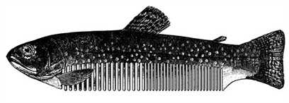

AMBIVALENCE
"Qu'un homme puisse aimer sa femme et surveiller la note de gaz est d'une ambiguïté difficile à supporter." Michel AUDIARD

Terme composé dans ses racines latines de ambi (deux) et valentia (valeur), se déclinant en ambiguïté qui est le caractère équivoque de quelque chose ou encore en ambiversion qui précise une personne se situant entre l'introversion et l'extraversion (ces derniers termes étant créés par le psychiatre suisse Carl Gustav JUNG et dont le psychiatre Eugen BLEULER, originaire du concept d'Ambivalence, était un temps le collaborateur). Il exprime pour BLEULER la rencontre conflictuelle entre la pulsion (inconscient) et la raison (conscient). Le conflit de ce croisement génère une tension psychique qui, à but de réduction, implique la mise en œuvre de mécanisme de défense comme le clivage, ingrédient que l'on retrouve prioritairement dans certaines structures psychiques (psychose) et de personnalités (borderline, narcissique).
L'ambivalence dans son évolution a donné en psychologie sociale la dissonance cognitive (travaux de Léon FESTINGER en 1957) qui est la recherche d'une réduction de tension interne lorsque nous ressentons un malaise émotionnel. Dans l'ambivalence, on peut voir une réduction notable du libre arbitre car l'objectif premier est de réduire la tension émotionnelle, notamment par une stratégie binaire (clivage). La scission favorise ainsi une économie psychique.
On mesure donc un défaut de synthèse de la situation conflictuelle vécue et ressentie qui est la conséquence directe du relâchement associatif, de l'articulation des pensées structurantes, en raison de la scission dans un but de stratégie psychique économique.
Pour le psychisme, tout est langage et dans l'ambivalence plus le langage est désorganisé plus le comportement moteur réponse à la désorganisation est rationnel et inadapté. L'exemple type est le champ des addictions.
Dans l'ambivalence, il y a un rapport direct avec l'association idéique issue d'affects non conscients (pulsion) face aux compréhensions conscientes (raison). Lors d'une idée directrice, les pensées logiques sont les associations fortes confrontées aux affects qui sont les associations faibles. Lorsque l'affect prend le dessus, il y a alors une inhibition des autres pensées afin de réduire le conflit intrapsychique. L'ambivalence "pathos" est une difficulté d'inhibition.
L'ambivalence dans son évolution a donné en psychologie sociale la dissonance cognitive (travaux de Léon FESTINGER en 1957) qui est la recherche d'une réduction de tension interne lorsque nous ressentons un malaise émotionnel. Dans l'ambivalence, on peut voir une réduction notable du libre arbitre car l'objectif premier est de réduire la tension émotionnelle, notamment par une stratégie binaire (clivage). La scission favorise ainsi une économie psychique.
On mesure donc un défaut de synthèse de la situation conflictuelle vécue et ressentie qui est la conséquence directe du relâchement associatif, de l'articulation des pensées structurantes, en raison de la scission dans un but de stratégie psychique économique.
Pour le psychisme, tout est langage et dans l'ambivalence plus le langage est désorganisé plus le comportement moteur réponse à la désorganisation est rationnel et inadapté. L'exemple type est le champ des addictions.
Dans l'ambivalence, il y a un rapport direct avec l'association idéique issue d'affects non conscients (pulsion) face aux compréhensions conscientes (raison). Lors d'une idée directrice, les pensées logiques sont les associations fortes confrontées aux affects qui sont les associations faibles. Lorsque l'affect prend le dessus, il y a alors une inhibition des autres pensées afin de réduire le conflit intrapsychique. L'ambivalence "pathos" est une difficulté d'inhibition.
Aussi, l'ambivalence affective se réfère au fait qu'une même représentation donne lieu simultanément à des sentiments positifs et négatifs.
On peut comprendre également l'ambivalence comme un régulateur de l'angoisse, ceci en dépolarisant un affect tensionnel, générant ainsi une scission soulageante. Et si l'ambivalence est trop intense, il y aura un renforcement des mécanismes de défense comme le clivage, le déni, le refoulement ou encore l'annulation rétroactive qui consiste à exprimer un ressenti et l'annuler juste derrière ou la sublimation qui consiste à un déplacement de la pulsion vers un agir acceptable et accessible, amenant autant de satisfaction que l'optique initial. Ces processus inconscients et autonomes favorisent ainsi le retour à une stabilité émotionnelle. Dans une dimension plus consciente, la dénégation favorise une réduction des ressentis désagréables en déniant une partie et en valorisant une autre.
L'ambivalence est donc un processus psychique faisant appel à nos instances tant conscientes qu'inconscientes, dans le but de nous apporter une stabilité de fonctionnement et en réduisant les conflits d'instances. Mais ce procédé peut "s'enflammer" et générer plus de tensions qu'il y avait initialement, la culpabilité en retour est un juste indicateur de cette désorganisation.
Pour les neurosciences, l'ambivalence peut être comprise comme un phénomène cérébro-structurel. En effet cela pourrait être des lacunes d'inhibitions entre certaines zones neuro-cérébrales comme l'amygdale (peur et anxiété), le système limbique (cerveau des émotions) et les aires orbito frontales (rationalisation, stratégie cognitive) : les aires frontales gauches sont le siège des émotions agréables et de la gratification, les aires frontales droites favorisent les réponses cognitives autour de l'évitement. Dans une harmonie de fonctionnement, il y a un subtil jeu d'inhibition et d'activation de ces aires favorisant une réponse cohérente et adaptée. Mais une dysrégulation peut favoriser le sentiment d'ambivalence.
On peut comprendre également l'ambivalence comme un régulateur de l'angoisse, ceci en dépolarisant un affect tensionnel, générant ainsi une scission soulageante. Et si l'ambivalence est trop intense, il y aura un renforcement des mécanismes de défense comme le clivage, le déni, le refoulement ou encore l'annulation rétroactive qui consiste à exprimer un ressenti et l'annuler juste derrière ou la sublimation qui consiste à un déplacement de la pulsion vers un agir acceptable et accessible, amenant autant de satisfaction que l'optique initial. Ces processus inconscients et autonomes favorisent ainsi le retour à une stabilité émotionnelle. Dans une dimension plus consciente, la dénégation favorise une réduction des ressentis désagréables en déniant une partie et en valorisant une autre.
L'ambivalence est donc un processus psychique faisant appel à nos instances tant conscientes qu'inconscientes, dans le but de nous apporter une stabilité de fonctionnement et en réduisant les conflits d'instances. Mais ce procédé peut "s'enflammer" et générer plus de tensions qu'il y avait initialement, la culpabilité en retour est un juste indicateur de cette désorganisation.
Pour les neurosciences, l'ambivalence peut être comprise comme un phénomène cérébro-structurel. En effet cela pourrait être des lacunes d'inhibitions entre certaines zones neuro-cérébrales comme l'amygdale (peur et anxiété), le système limbique (cerveau des émotions) et les aires orbito frontales (rationalisation, stratégie cognitive) : les aires frontales gauches sont le siège des émotions agréables et de la gratification, les aires frontales droites favorisent les réponses cognitives autour de l'évitement. Dans une harmonie de fonctionnement, il y a un subtil jeu d'inhibition et d'activation de ces aires favorisant une réponse cohérente et adaptée. Mais une dysrégulation peut favoriser le sentiment d'ambivalence.
EN RELATION


NON CHOIX
DOUBLE CONTRAINTE
LEGITIMITE
CULPABILITE
FRUSTRATION
IDEAL